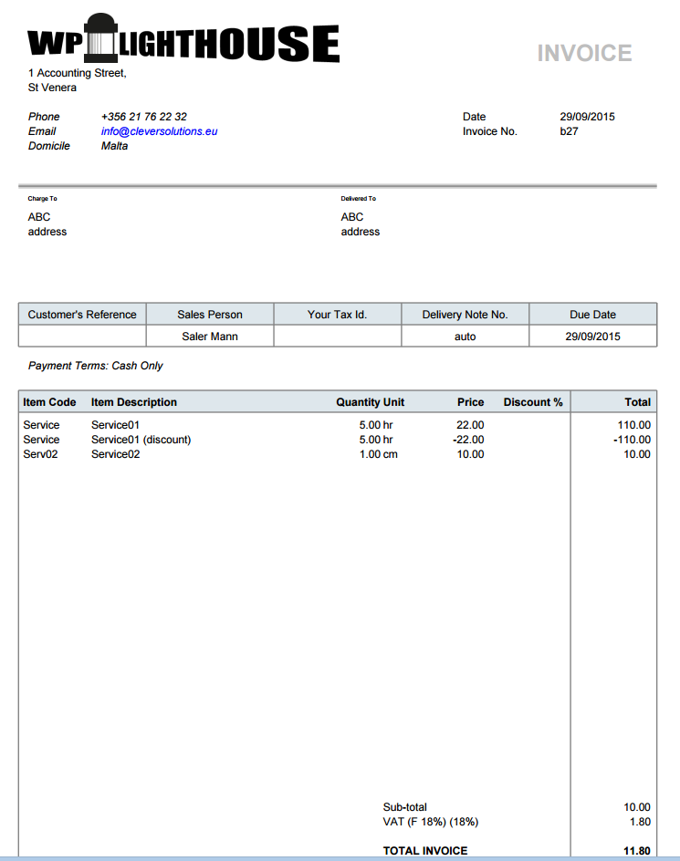

The FA system is very flexible in the way it can handle sales, from complete integration with a manufacturing process to just issuing invoices.
Handling Pre Payments in FA | Cache
You can use the complete sales process or just the steps you require depending on your operation. The menu options below are annotated with suggestions as to which Department would use them.
Simple Sales Process
Issue Invoice
Intermediate Sales Process
Despatch the goods
Print Invoice
Complex Sales Process
Set up a Quotation
Convert Quotation to a Sales Order
Despatch the goods
Print Invoice
Sales Return and De-Allocation
Sales Invoice is sent for products.
Sales Invoice is paid by Customer.
Customer is returning Items to us for some reason and the items are ok.
Credit Note is sent to Customer.
Bank Payment is sent to Customer as Compensation for returned Items.
Go into Allocations, because the Credit Note has taken over the former allocation and the original Payment is left with no allocation. Use this original Payment for allocating your Bank Payment to the Customer and everything is correct.
Alternatively, instead of doing the no. 5 above - Bank Payment to pay the customer as compensation - you can make an agreement with the customer to let the Customer Payment be there waiting for allocation of a future Sales Invoice.
Search by Customer Reference to make payment: The Customer Order Reference field when you create sales order can be amended with your customers order number, so 008/2018 could become 008/2018 ON-5678330 and to confirm this is the value that will appear in the Reference' column of the transaction inquiry/allocation inquiry page.
When printing Invoices from print-out center, you can select to include a Paypal link.
If you want to be paid by credit card, then create a bank account with the name of the credit card.
Configure invoice print layout.
Before invoicing service type items to customers, the service items must be explicitly added to the list of items as such.
Legal Text is available only in Invoice and not in Order Entry form.
Forum Post: The Customer Reference is available as an option for input in all Sales Forms (Sales Quotation, Order, Delivery and Invoice) where the Payment Terms (mandatory) is "Non Cash". Screenshot.
Forum Post: Salesman restriction possibilities in Role Permissions
Running Total for Final Invoice
The ultimate goal is to finalize the invoice at the end of the month after inputting all material and service deliveries during the month.
Solution:
Create a UOM for hours; set to 2 decimal places, (or one for minutes to be exact)
Then create an item with the name of your service, make sure you select service for Item Type:, select the above UOM and make sure you check the box marked Editable description:
Make sure you have the term of payment you require Setup -> Payment Terms ('Day in the following month' would probably be best for you)
Then go to Sales -> Sales Order Entry
Select the credit terms you require; do not leave as Cash. and fill out the rest of the details.
Select the item you created above, now because you checked the box marked Editable description, you can amend the Item Description to anything you want, in your case add the date, job number, etc. fill in the rest of the Item line...quantity...price(setup sales price first and this will fill automatically).. etc
When you finish click 'Place Order'.
The next day go to ->Sales Order Inquiry and find the sales order you made the day before (you may need to change the search parameters ie., date).
Click the edit icon on the right, you should now see the previous order and can add another Item line with this days work...
when you finish click the button labelled Commit Order Changes.
Then repeat this procedure for every day.
At the the end of the month after you've entered the last day you will see an option to Confirm Order Quantities and Make Delivery.
Check the details then click Process Despatch button.
You will see an option to Invoice This Delivery, one last chance to change only quantities.
Click Process Invoice and your customer will have an itemised bill.
Cash Sale
Scenario: Customer just walks in, buys the items by paying the cash.
Set up a cash customer with a cash branch
In the branch, select a cash account as Account Receivable Account
Set the Payment Terms on the cash customer to 0 days
All the statistics are now available for it too now
Don't forget to set up: Setup -> POS setup -> Cash Account
Credit Card Sale
Setup => Payment Terms => create new payment terms as Cash type but name it Credit Card.
Create a GL Account similar to Petty Cash account_code and call it Credit Card (CC).
Create a bank account for Credit Cards and assign the Credit Card GL Account to it - this is your merchant bank account.
Create a POS for Credit Cards in Setup => Points of Sale and assign it the bank account for Credit Cards with atleast Cash sales enabled.
Create a new user with appropriate credentials and assign the POS for Credit Cards to it.
Now this new user can create credit card payment invoices that would go to the Credit Card Cash Account.
Prepaid Sale
Prepayment terms are not available in Direct Invoice form.
If they are on your setup, you have badly defined prepayment terms.
To issue invoice in prepayment mode:
Enter Sales Order first,
Then enter received payment
Finally issue invoice against the payment in Invoice Prepaid Orders screen.
Prepayment invoices are maintained in this special procedure, as what is invoiced here exactly, is payment received, not the goods sold.
Prepaid Sales and Purchases are now available in FA 2.4.x but use with care - Forum Post.
Pre-Requisites for a Prepaid Order
Add a Prepayment type Payment Terms in Sales => Payment Terms page
Create a Deferred Income Account in the Chart Master under Current Liabilities if one does not exist, say in the Standard CoA's as 2105
Choose this Deferred Income Account in the Banking and GL Setup page under the same head.
Now we can make a Sales Order with the Payment Terms as Prepayment, accept payments for it and then invoice the Prepaid Order.
Deferred Income Account
As of Dec 2017, none of the official Charts of Accounts including the Standard ones have a Prepaid Type Payment Term and Deferred Income Account by default.
Forum Post: Note that when a delivery is attempted for a cash sale an error ensues if a Deferred Income Account has not been set in Setup->System and General Ledger Setup.
Deferred revenue is not yet revenue. It is an amount that was received by a company in advance of earning it. The amount unearned (and therefore deferred) as of the date of the financial statements should be reported as a liability. The title of the liability account might be Unearned Revenues or Deferred Revenues.
Change Customer on Edit Customer Payment
If the customer payment is allocated to an invoice, and if you are editing the payment change the customer.
The allocation part gets confused with allocated customer and payment customer.
If you want to edit the customer, you have to edit the allocation and allocated invoice to maintain the allocation.
One Time Sale - Do not save Ship To Address to Customer
The goal is to add the ship-to address without saving to customer in FrontAccounting
To display the order delivery details in sales order entry, you need to use a payment type with a non-zero number of days.
Remove Item Code from Invoice
doctext.inc has the label for the Item Code field that can be replaced with a blank string.
The appropriate report (like rep107.php) can be edited for where the Item Code line prints and can be placed in the appropriate company/#/reporting folder.
100% Discount Item
When we choose to offer an Service item (does not affect inventory) for free but would like to see the unit rate and qty in the printed invoice we need to enter the discount as a separate line item with negative rate to indicate the discount.
Sample Invoice entry for 100% Discount:

Get in touch
If you require help using the software or have any questions, our support team is here to assist you. Please contact us through the available support channels, and we will respond as promptly as possible to ensure smooth and uninterrupted usage of the system.